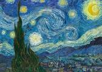

Arte Digital


- 
Desde finales del siglo XX las tecnologías de la imagen han conocido una transformación tan radical como los cambios que se dieron tras los debates fotográficos de finales de la década de 1920 y principios de la de 1930, o por el pop entre las décadas de 1950 y 1960. De ser entendida como un mensaje sin código, una plasmación directa de la realidad, a contemplarla como algo atravesado por complicados códigos de diversos tipos, matizando su presunta referencialidad y revisando sus posibles aplicaciones en arte. Con la manipulación digital, sea de imágenes tomadas con una cámara digital o por la digitalización de imágenes o negativos fotográficos escaneados, se ajustan las proporciones, se corrige la perspectiva y se cambia el color, sintetizando imágenes novedosas. El montaje, que antes se evidenciaba, se vuelve oculto, intrínseco a la imagen misma.
Las técnicas del arte digital aplicadas en la edición electrónica han tenido un impacto enorme en el mundo editorial, a pesar de estar más relacionadas con el diseño gráfico. Es posible que la aceptación general del valor del arte digital se desarrolle de manera muy similar a la aceptación de la música electrónica producida desde las últimas tres décadas del siglo XX.
Las imágenes en el arte digital pueden ser generadas directamente por ordenador (como las imágenes de arte fractal y el arte algorítmico) o bien tomadas de otras fuentes, como una fotografía escaneada o una imagen dibujada con un software de gráficos vectoriales usando un ratón o tableta gráfica.
Aunque técnicamente el término arte digital puede ser aplicado al arte hecho mediante el uso de otros medios o procesos y posteriormente escaneado, suele reservarse para el arte que no ha sido simplemente modificado por un proceso de computación (como un programa de ordenador, microcontrolador o cualquier sistema electrónico capaz de interpretar una imagen digitalizada); los datos de texto, las grabaciones originales de audio y video digitalizados no suelen considerarse arte digital en sí mismos, aunque pueden ser parte de un proyecto más grande de arte digital.
El arte pop y toda su controversial estética y postura ante la realidad, además, suponía una reacción frente a los cánones de las bellas artes tradicionales, del mismo modo en que la música pop constituyó en su momento un gesto de ruptura a los preceptos tradicionales de la música.